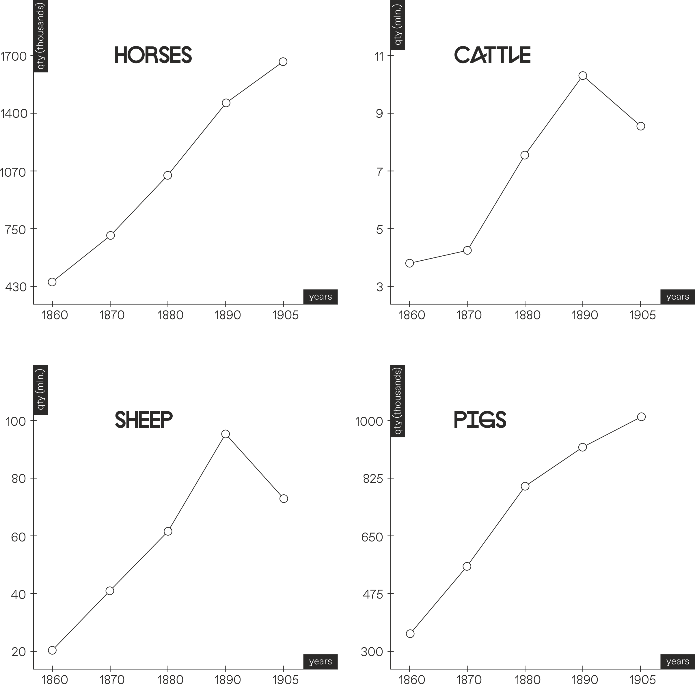
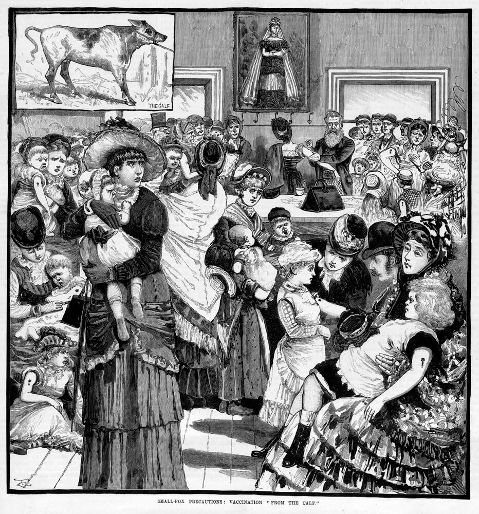
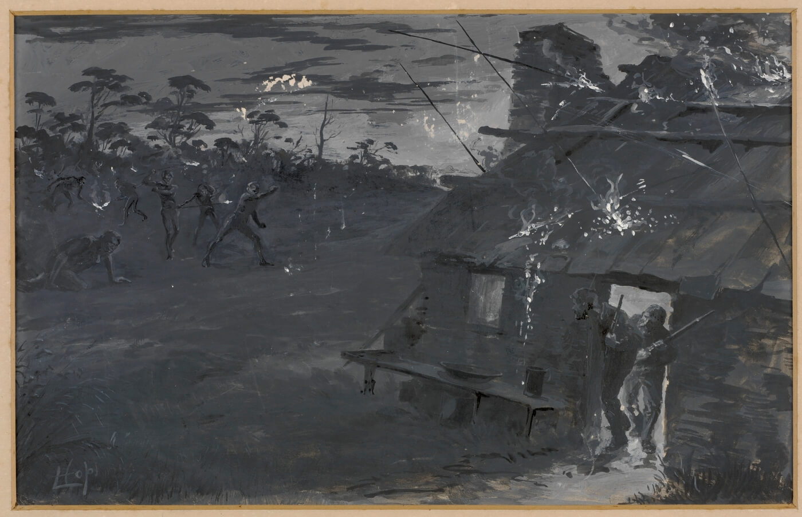
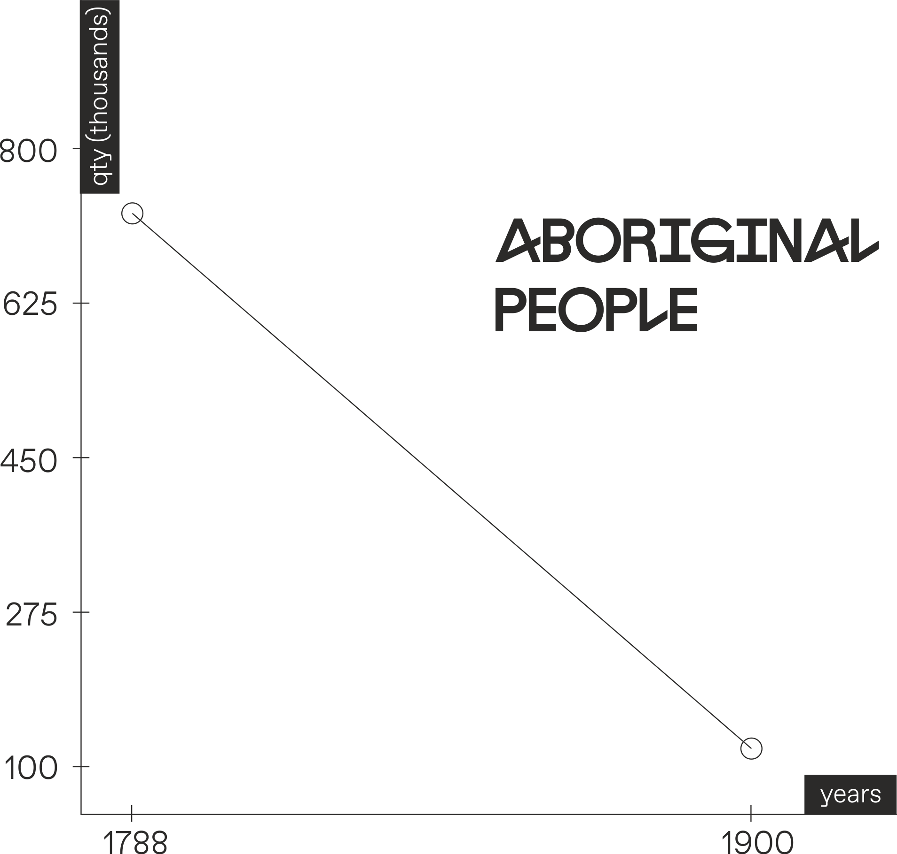
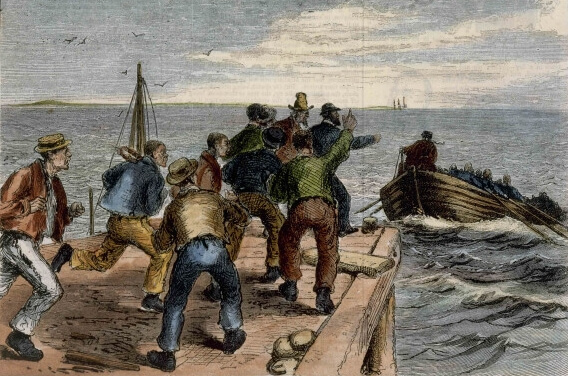
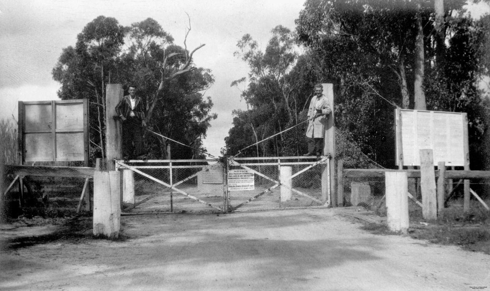

<div class="h-100 tree-of-liberty bg-orange d-flex justify-content-center">
    <div class="all-width screen-size container-for-scroll orange-background">
        <div class="position-relative page-28 position-relative d-flex flex-column align-items-center justify-content-between h-100">
            <div class="w-100 position-relative d-flex justify-content-end pr-5 py-5">
                
                <div class="h-100 d-flex flex-column justify-content-between align-items-center position-absolute page-28-container">
                    <div class="d-flex align-items-center  p-0 mb-0 page-28-container-first position-relative">
                        <div class="dropdown show d-flex align-items-center">
                            <div class="p-0 info position-relative">
                                <h3 class="m-0 text-right">The Fight for <br/> Space and Substance</h3>
                            </div>
                            <a
                                    class="rounded-circle tree-of-liberty__btn text-white border-0 d-flex align-items-center justify-content-center bg-white dropdown-toggle flex-shrink-0"
                                    href="#"
                                    role="button"
                                    id="theFightForSpaceAndSubstance"
                                    data-toggle="dropdown"
                                    aria-haspopup="true"
                                    aria-expanded="false">
                            </a>
                            <div
                                    class="dropdown-menu author"
                                    aria-labelledby="theFightForSpaceAndSubstance">
                                <button class="btn bg-transparent border-0 shadow-none position-absolute close-sticky-modal p-0"
                                        type="button">
                                    <svg width="25" height="25" viewBox="0 0 60 60" fill="none" xmlns="http://www.w3.org/2000/svg">
                                        <path d="M33.3147 30.0001L59.3135 4.00115C60.2288 3.0858 60.2288 1.60174 59.3135 0.686512C58.3981 -0.22872 56.9141 -0.228837 55.9988 0.686512L29.9999 26.6854L4.00115 0.686512C3.0858 -0.228837 1.60174 -0.228837 0.686512 0.686512C-0.22872 1.60186 -0.228837 3.08592 0.686512 4.00115L26.6853 29.9999L0.686512 55.9988C-0.228837 56.9142 -0.228837 58.3983 0.686512 59.3135C1.14413 59.7711 1.74401 59.9998 2.34389 59.9998C2.94377 59.9998 3.54353 59.7711 4.00127 59.3135L29.9999 33.3147L55.9987 59.3135C56.4563 59.7711 57.0562 59.9998 57.6561 59.9998C58.256 59.9998 58.8558 59.7711 59.3135 59.3135C60.2288 58.3981 60.2288 56.9141 59.3135 55.9988L33.3147 30.0001Z" fill="#282828"/>
                                    </svg>
                                </button>
                                <div class="w-100 h-100 popup-container px-3">
                                    <ul class="list-unstyled">
                                        <li class="d-flex align-items-start">
                                            The first British colonists soon realized how harsh and
                                            unforgiving the Australian land could be. The land itself
                                            was
                                            hot, arid, and uncompromising, meaning that it was not ideal
                                            as
                                            ideal for agriculture as the settlers had first been led to
                                            believe. Worse still, the country lacked fauna that could be
                                            domesticated for farming; try as you might, farming
                                            kangaroos
                                            will never be as profitable as farming cows or sheep!
                                        </li>
                                    </ul>
                                    
                                </div>
                            </div>
                        </div>
                    </div>
                    <div class="flex-grow-1 line-dashed"></div>
                    <p class="text-uppercase mb-0 position-absolute australia"><span
                            class="first-letter">A</span>ustralia</p>
                    <div class="d-flex align-items-center p-0 mb-0 page-28-container-fourth position-relative">
                        <div class="dropdown show d-flex align-items-center">
                            <a
                                    class="rounded-circle tree-of-liberty__btn text-white border-0 d-flex align-items-center justify-content-center bg-white dropdown-toggle"
                                    href="#"
                                    role="button"
                                    id="coughsSneezesSpreadNewDiseases"
                                    data-toggle="dropdown"
                                    aria-haspopup="true"
                                    aria-expanded="false">
                            </a>
                            <div class="p-0 info position-relative transitionX-30">
                                <h3 class="m-0">Coughs and Sneezes <br/> Spread New Diseases</h3>
                            </div>
                            <div
                                    class="dropdown-menu author"
                                    aria-labelledby="coughsSneezesSpreadNewDiseases">
                                <button class="btn bg-transparent border-0 shadow-none position-absolute close-sticky-modal p-0"
                                        type="button">
                                    <svg width="25" height="25" viewBox="0 0 60 60" fill="none" xmlns="http://www.w3.org/2000/svg">
                                        <path d="M33.3147 30.0001L59.3135 4.00115C60.2288 3.0858 60.2288 1.60174 59.3135 0.686512C58.3981 -0.22872 56.9141 -0.228837 55.9988 0.686512L29.9999 26.6854L4.00115 0.686512C3.0858 -0.228837 1.60174 -0.228837 0.686512 0.686512C-0.22872 1.60186 -0.228837 3.08592 0.686512 4.00115L26.6853 29.9999L0.686512 55.9988C-0.228837 56.9142 -0.228837 58.3983 0.686512 59.3135C1.14413 59.7711 1.74401 59.9998 2.34389 59.9998C2.94377 59.9998 3.54353 59.7711 4.00127 59.3135L29.9999 33.3147L55.9987 59.3135C56.4563 59.7711 57.0562 59.9998 57.6561 59.9998C58.256 59.9998 58.8558 59.7711 59.3135 59.3135C60.2288 58.3981 60.2288 56.9141 59.3135 55.9988L33.3147 30.0001Z" fill="#282828"/>
                                    </svg>
                                </button>
                                <div class="w-100 h-100 popup-container">
                                    
                                    <div class="px-3">
                                        <p class="my-3 text-center">
                                            <small>
                                                Small-pox precautions: vacations “from the calf”,
                                                Australian
                                                Sketcher, 6ht May 1882. Note the marks on the arms of
                                                the
                                                girls, which indicate that they have been vaccinated
                                                from
                                                the deadly disease. Aboriginal people were not so lucky…
                                            </small>
                                        </p>
                                        <ul class="list-unstyled">
                                            <li class="mt-1">
                                                The Aboriginal population declined sharply in the aftermath
                                                of
                                                the arrival of the British colonists, partly as a result of
                                                being driven from their traditional lands and partly as a
                                                result
                                                of violence. However, by far the single biggest cause of the
                                                decline in aboriginal population was the wave of epidemic
                                                diseases that spread across the new imperial frontier.
                                            </li>
                                            <li class="mt-3">
                                                “In a process that was frighteningly similar to that which
                                                had
                                                occurred following the Spanish arrival in the Americas in
                                                the
                                                late 15th century, the introduction of ‘European’ diseases –
                                                such as Smallpox, Measles, and Influenza – to a native
                                                population with no natural resistance annihilated a number
                                                of
                                                indigenous communities.
                                            </li>
                                            <li class="mt-3">
                                                Sexual aggression and exploitation of the aboriginal women
                                                and
                                                girls also contributed to the spread of venereal diseases,
                                                which
                                                also reach epidemic levels within the first decades after
                                                the
                                                arrival of the British.
                                            </li>
                                        </ul>
                                    </div>
                                </div>
                            </div>
                        </div>
                    </div>
                </div>
                <div class="d-flex align-items-center p-0 ml-auto mb-0 page-28-container-first-second position-absolute">
                    <div class="dropdown show d-flex align-items-center">
                        <a
                                class="rounded-circle tree-of-liberty__btn text-white border-0 d-flex align-items-center justify-content-center bg-white dropdown-toggle"
                                href="#"
                                role="button"
                                id="effectOnPeople"
                                data-toggle="dropdown"
                                aria-haspopup="true"
                                aria-expanded="false">
                        </a>
                        <div class="p-0 info position-relative transitionX-30">
                            <h3 class="m-0">Effect on <br/> People</h3>
                        </div>
                        <div
                                class="dropdown-menu author"
                                aria-labelledby="effectOnPeople">
                            <button class="btn bg-transparent border-0 shadow-none position-absolute close-sticky-modal p-0"
                                    type="button">
                                <svg width="25" height="25" viewBox="0 0 60 60" fill="none" xmlns="http://www.w3.org/2000/svg">
                                    <path d="M33.3147 30.0001L59.3135 4.00115C60.2288 3.0858 60.2288 1.60174 59.3135 0.686512C58.3981 -0.22872 56.9141 -0.228837 55.9988 0.686512L29.9999 26.6854L4.00115 0.686512C3.0858 -0.228837 1.60174 -0.228837 0.686512 0.686512C-0.22872 1.60186 -0.228837 3.08592 0.686512 4.00115L26.6853 29.9999L0.686512 55.9988C-0.228837 56.9142 -0.228837 58.3983 0.686512 59.3135C1.14413 59.7711 1.74401 59.9998 2.34389 59.9998C2.94377 59.9998 3.54353 59.7711 4.00127 59.3135L29.9999 33.3147L55.9987 59.3135C56.4563 59.7711 57.0562 59.9998 57.6561 59.9998C58.256 59.9998 58.8558 59.7711 59.3135 59.3135C60.2288 58.3981 60.2288 56.9141 59.3135 55.9988L33.3147 30.0001Z" fill="#282828"/>
                                </svg>
                            </button>
                            <div class="w-100 h-100 popup-container">
                                
                                <div class="d-flex flex-wrap align-items-end px-3">
                                    <p class="mt-3 mb-2 text-center">
                                        <small>
                                            Night Attack by Blacks’, 19th century, Livingstone Hopkins.
                                            The aboriginal attack here is directed against the western
                                            house, showing the clash between two totally different ways
                                            of life
                                        </small>
                                    </p>
                                    <p class="text-decoration-underline"><b>Effect on People</b></p>
                                    <ul class="list-unstyled">
                                        <li class="d-flex align-items-start">
                                            The lack of decent arable land available to the earlies
                                            settlers
                                            motivated tensions between the colonists and natives to
                                            escalate
                                            and quickly become violent. The need for land to cultivate
                                            food
                                            and access to reliable water frequently led to violent
                                            clashes
                                            between the groups. The settlers believed that the nomadic
                                            lifestyle of the aborigines meant that they could simply be
                                            driven from their lands. Retaliation by the aborigines was
                                            met
                                            with violence
                                        </li>
                                    </ul>
                                </div>
                                
                            </div>
                        </div>
                    </div>
                </div>
                <div class="d-flex align-items-center p-0 ml-auto mb-0 page-28-container-third position-absolute">
                    <div class="dropdown show d-flex align-items-center">
                        <a
                                class="rounded-circle tree-of-liberty__btn text-white border-0 d-flex align-items-center justify-content-center bg-white dropdown-toggle"
                                href="#"
                                role="button"
                                id="effectOnWildlife"
                                data-toggle="dropdown"
                                aria-haspopup="true"
                                aria-expanded="false">
                        </a>
                        <div class="p-0 info position-relative transitionX-30">
                            <h3 class="m-0">Effect on <br/> wildlife</h3>
                        </div>
                        <div
                                class="dropdown-menu author"
                                aria-labelledby="effectOnWildlife">
                            <button class="btn bg-transparent border-0 shadow-none position-absolute close-sticky-modal p-0"
                                    type="button">
                                <svg width="25" height="25" viewBox="0 0 60 60" fill="none" xmlns="http://www.w3.org/2000/svg">
                                    <path d="M33.3147 30.0001L59.3135 4.00115C60.2288 3.0858 60.2288 1.60174 59.3135 0.686512C58.3981 -0.22872 56.9141 -0.228837 55.9988 0.686512L29.9999 26.6854L4.00115 0.686512C3.0858 -0.228837 1.60174 -0.228837 0.686512 0.686512C-0.22872 1.60186 -0.228837 3.08592 0.686512 4.00115L26.6853 29.9999L0.686512 55.9988C-0.228837 56.9142 -0.228837 58.3983 0.686512 59.3135C1.14413 59.7711 1.74401 59.9998 2.34389 59.9998C2.94377 59.9998 3.54353 59.7711 4.00127 59.3135L29.9999 33.3147L55.9987 59.3135C56.4563 59.7711 57.0562 59.9998 57.6561 59.9998C58.256 59.9998 58.8558 59.7711 59.3135 59.3135C60.2288 58.3981 60.2288 56.9141 59.3135 55.9988L33.3147 30.0001Z" fill="#282828"/>
                                </svg>
                            </button>
                            <div class="w-100 h-100 popup-container">
                                
                                <div class="d-flex flex-wrap align-items-end px-3">
                                    <p class="mt-3 mb-2 text-center">
                                        <small>
                                            A mounted stockman, an illustration from Dr Doyle’s Sketch
                                            Book, (ca.1862-3). This image shows a somewhat romanticized
                                            livestock worker in Australia. The introduction of European
                                            farming techniques and livestock was disastrous for native
                                            species.
                                        </small>
                                    </p>
                                    <p class="text-decoration-underline"><b>Effect on wildlife:</b></p>
                                    <ul class="list-unstyled">
                                        <li class="mt-1">
                                            Unique geological and climatic events had made the flora and
                                            fauna of Australia some of the most unique and unusual to be
                                            found anywhere. However, they soon realized that the native
                                            species were unsuitable for farming and food. The
                                            introduction
                                            of European species into the newly discovered continent
                                            would
                                            have profound, negative implications on the native wildlife
                                            and
                                            plant-life.
                                        </li>
                                    </ul>
                                </div>
                                <div class="orange-background px-3 text-white py-2">
                                    <h5 class="text-center">#rabbits</h5>
                                    
                                    <p class="mt-3 mb-2 text-center">
                                        <small>
                                            Gate in the Rabbit Fence at Stanthorpe, Queensland (1934).
                                            Rabbits – introduced by colonisers – were so prolific and
                                            damaging to the land, that extensive fences were built in an
                                            attempt to limit their spread
                                        </small>
                                    </p>
                                    <ul class="list-unstyled">
                                        <li class="mt-1">
                                            “Perhaps the most famous of the invasive species brought to
                                            Australia by the European settlers was the humble rabbit,
                                            which arrived with the First Fleet in 1788. Although at
                                            first they do not appear to have spread, by as early as
                                            1827, the Colonial Times and Tasmanian Advertiser newspaper
                                            was reporting that, “the common rabbit is becoming so
                                            numerous… that they are running about on some large estates
                                            by thousands”.
                                        </li>
                                        <li class="mt-3">
                                            Rabbits are notoriously prolific breeders, and the mid-19th
                                            century population boom that was recorded in Australia
                                            remains the fastest spread ever recorded of any mammal,
                                            anywhere in the world.
                                        </li>
                                        <li class="mt-3">
                                            10 billion – the number of rabbits believed to be in
                                            Australia by the year 1920, less than 150 years since their
                                            arrival!
                                        </li>
                                        <li class="mt-3">
                                            Although later the rabbits would prove an invaluable
                                            resource for Australians in times of economic hardship, they
                                            are nevertheless a pest and a hugely devastating ecological
                                            problem. These adorable creatures are today believed to be
                                            the most significant identifiable factor in species loss in
                                            Australia.
                                        </li>
                                    </ul>
                                </div>
                            </div>
                        </div>
                    </div>
                </div>
            </div>
            <div class="page-number  text-center b-0 position-sticky w-100" style="z-index: 1">
                28
            </div>
        </div>
    </div>
</div>
